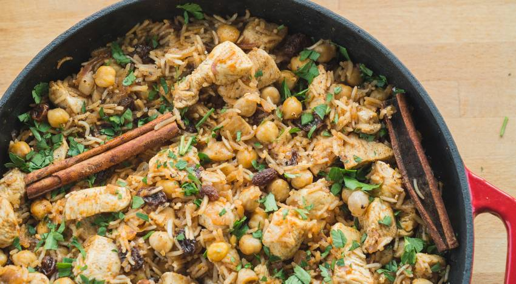

Moroccan Chicken

Description
Chicken and rice may be your go-to source of protein and carbohydrate, but it doesn’t have to be uninspiring!
We are kicking up the flavors in a huge way by doing a Moroccan-inspired chicken and rice recipe.
Best thing is – you can whip this up in little time using common spices and seasonings in your cabinet.
It’s all about pairing different flavors together! So, grab the allspice that you used this fall when baking delicious pies,
and the cumin you sprinkled on that fish/chicken last week and let’s get to cooking up a sweet and savory rice dish.
Ingredients
- 1-1/2 lb raw chicken breast, cut into chunks
- olive oil
- 2/3 cup red onion, diced
- 1 cup rice, uncooked
- 1 can chickpeas, rinsed and drained
- 1-1/2 cup low sodium chicken stock
- 1-1/2 tsp cumin
- 1 tsp paprika
- 1/2 tsp allspice
- 1/2 tsp caynenne pepper, or to taste
- 3 cinnamon sticks, optional
- fresh parsley
- lemon juice
Steps
- Spray a nonstick skillet with olive oil and set on medium heat.
Toss the chicken into the skillet and cook until the outside is no longer pink and some of the edges are brown, about 6 to 8 minutes.
It is ok if the chicken is not entirely cooked, we just want the outside seared.
Set the chicken aside but place the skillet back on the heat.
- Add olive oil and red onions to the skillet. Saute the onions for about 3 minutes until they are brown and somewhat translucent.
Add rice, chickpeas and seasonings to the skillet. “Bloom” everything together and ensure the rice and chickpeas are completely covered in oil and seasonings.
Cook for about 3 to 5 minutes.
- Pour in chicken stock and bring everything to a boil. Toss in raisins and chicken (and cinnamon sticks) and reduce heat to low-medium.
Cover and cook for about 20 minutes, until the rice is soft, not mushy.
- Stir it up, then season to taste with sea salt and pepper.
- Garnish with freshly chopped parsley.